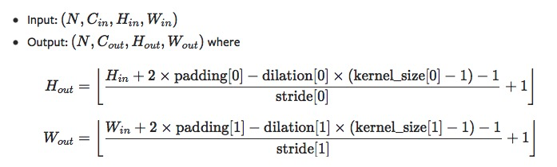
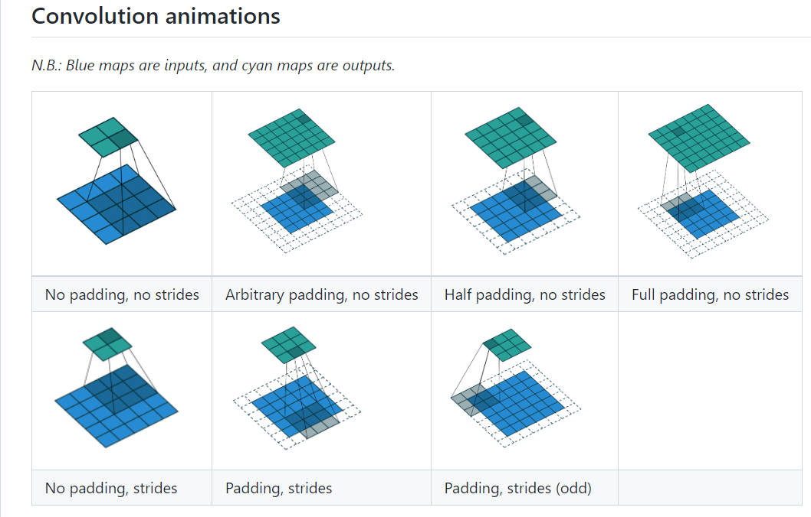
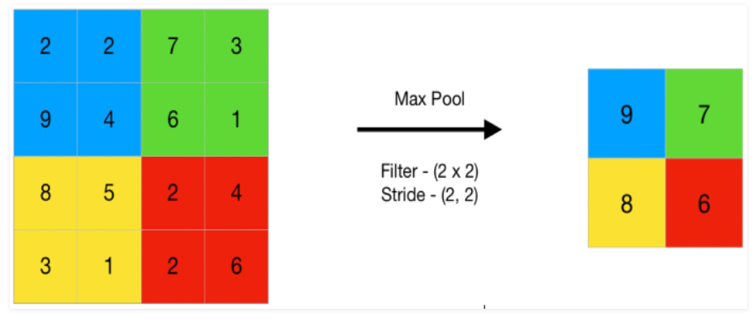
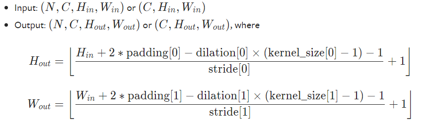
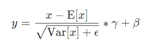
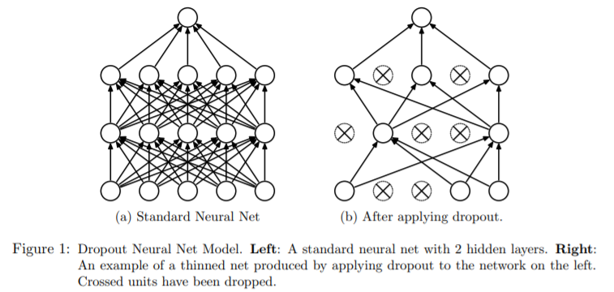
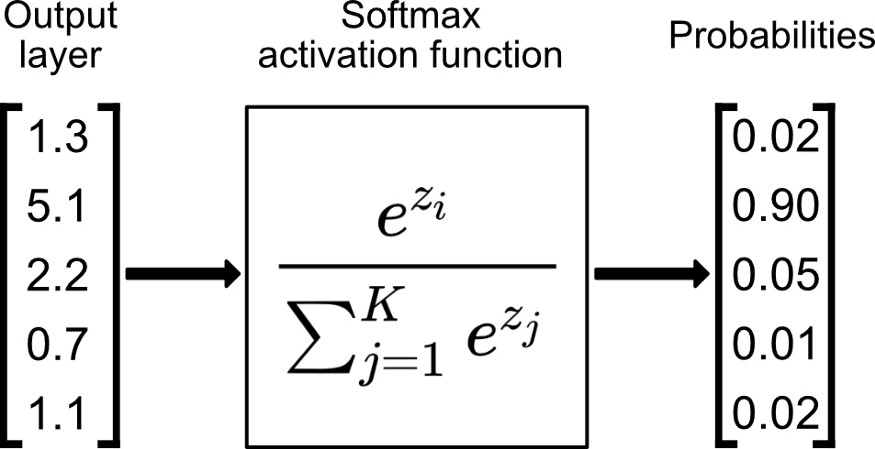
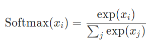
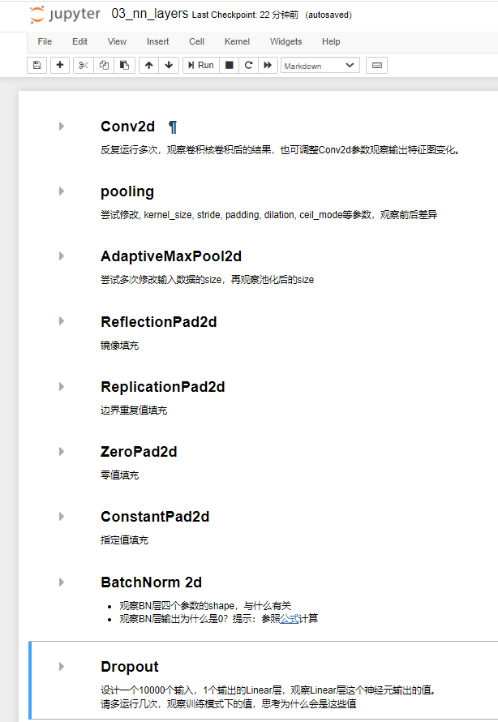

4.3 常用网络层
本小节将介绍几个常用的layers，核心目的是传授如何学习各layers的方法，今后更多layers也可自行从官方文档中学习。
Convolutional Layers
卷积整体分两大类，正常卷积与转置卷积（Transpose Convolution），除此之外还有Lazy系列的正常卷积与转置卷积，Lazy系列就是懒惰系列，为那些懒得计算输入特征图的通道数的人设计的，经过第一次forward之后，该网络层的in_channels将被确定。
下面通过官方文档详细学习Conv2d这个卷积层，在文档中会详细介绍该层的功能，各参数含义，计算公式，以及示例代码。
torch.nn.Conv2d(in_channels, out_channels, kernel_size, stride=1, padding=0, dilation=1, groups=1, bias=True, padding_mode='zeros')
主要功能：对多个二维平面组成的信号进行二维卷积
主要参数：
- in_channels (int) – Number of channels in the input image。输入这个网络层的图像的通道数是多少。
- out_channels (int) – Number of channels produced by the convolution。此网络层输出的特征图的通道数是多少，等价于卷积核数量是多少。
- kernel_size (int or tuple) – Size of the convolving kernel。卷积核大小。
- stride (int or tuple, optional) – Stride of the convolution. Default: 1。卷积核卷积过程的步长。
- padding (int, tuple or str, optional) – Padding added to all four sides of the input. Default: 0。对于输入图像的四周进行填充的数量进行控制，可指定填充像素数量，也可以指定填充模式，如"same", "valid"，具体含义参见文档，这是从TF中借鉴过来的。
- padding_mode (string, optional) – 'zeros', 'reflect', 'replicate' or 'circular'. Default: 'zeros'。填充的像素值如何确定。默认填充0。
- dilation (int or tuple, optional) – Spacing between kernel elements. Default: 1。孔洞卷积的孔洞大小。
- groups (int, optional) – Number of blocked connections from input channels to output channels. Default: 1。分组卷积的分组。
- bias (bool, optional) – If True, adds a learnable bias to the output. Default: True。是否采用偏置。
nn.Conv2d是图像领域里99%模型都用到的，它的计算公式及细节需要大家了如指掌，具体公式如下：`

这里建议大家结合各种动图进行学习，推荐这个repo，

Pooling Layers
Pooling layer叫池化层，池化是形象词，就像下雨天篮球场上低洼的地方会聚集周围的雨水一样，由大变小的过程。
自然它的作用是将特征图分辨率变小，通常减小一半。如下图所示，相同颜色的区域”池化“为1个像素，4x4的图像变为了2x2的图像。

图片来源:https://www.geeksforgeeks.org/cnn-introduction-to-pooling-layer/
1个像素代替4个像素，那应该用什么值呢？针对这个问题的解决方法，可对池化层进行划分为最大值池化、平均值池化、分数阶池化、基于范数的池化。分别对应torch.nn中的Maxpool, Avgpool, FractionalMaxPool, LPPool。
由于它们只是在计算像素时才用的方法不同，下面就以Maxpool为例讲解池化层。
torch.nn.MaxPool2d(kernel_size, stride=None, padding=0, dilation=1, return_indices=False, ceil_mode=False)
功能：2D最大池化
参数：
- kernel_size – 池化窗口大小
- stride – 滑窗步长
- padding – 原图填充大小
- dilation – 孔洞大小
- return_indices – 是否返回最大值所在位置，主要在 torch.nn.MaxUnpool2d 中使用，是上采样的一种策略
- ceil_mode – 当无法整除时，是向下取整还是向上取整，默认为向下。
池化层输出特征图的大小计算公式如下，细心的朋友会发现它与卷积层是一样的。

针对最大池化还有一个特殊的地方是它可以记录最大值所在的位置，供上采样时（MaxUnpool2d）所用，这个在图像分割任务中会有涉及。MaxUnpool2d的使用非常简单，参数设置很容易。原型如下：
torch.nn.MaxUnpool2d(kernel_size, stride=None, padding=0)，具体使用可看配套代码。
自适应池化层
上面针对池化像素如何取值进行划分，其实针对窗口大小的选择也可划分，还有另外一种特殊的池化方法，那就是AdaptiveXpool， 它的作用是自适应窗口大小，保证经过池化层之后的图像尺寸是固定的，这个在接入全连接层之前经常会见到。
使用也很方便，只需要设置想要的输出大小即可，详细可见配套代码。torch.nn.AdaptiveMaxPool2d(output_size, return_indices=False)
Padding Layers
Padding layer在许多魔改网络中常用到，功能是给特征图周围填充一定的像素，调整特征图分辨率的一种方法。既然是填充就涉及两个问题，填充多少个像素？像素应该如何确定？
针对第二个问题，可将padding layer划分为三类，镜像填充、边界重复填充，指定值填充、零值填充，分别对应nn的三大类，nn.ReflectionPad2d， nn.ReplicationPad2d， nn.ZeroPad2d， nn.ConstantPad2d，使用非常简单，详细可见配套代码。
Linear Layers
Linear Layers包含4个层分别是nn.Identity，nn.Linear， nn.Bilinear， nn.LazyLinear
nn.Identity 是恒等映射，不对输入做任何变换，它通常用于占位。
nn.Linear 就是大家熟悉的全连接层(Fully Connection Layer)，可实现 y= Wx + b
nn.Bilinear 是双线性层，它有两个输入，实现公式 y = x1Wx2 +b
nn.LazyLinear 是nn.Linear的lazy版本，也就是懒惰的Linear层，它在第一次推理时自动根据输入特征图的尺寸来设定in_features，免去了手动计算in_features的麻烦。
Linear层十分简单，就不用代码演示了。
Normaliation Layers
Normaliation Layers 里包含主流的标准化网络层，分别有BN、LN、IN、GN以及早期的LRN。这一些列的层已经成为现在深度学习模型的标配，它们充当一种正则，对数据的分布进行变换，使数据分布变到0均值，1标准差的形式。实验结果发现这样做可以加速模型训练，让模型更稳定，精度更高。
其中最出名的当属2015年提出的BatchNorm, 来自于Google团队的Batch Normalization: Accelerating Deep Network Training by Reducing Internal Covariate Shift，关于BN的介绍网上有很多文章，大家可自行学习，在代码实现上我们需要熟悉网络层内部的参数，以及训练与推理过程中的差异。
BatchNorm 会对输入进行减均值、除以标准差、乘以γ、加β的操作。如下图所示：

其中γ与β是Parameter，是可训练的参数，与卷积层的卷积核、FC层的权重一样，容易理解。
均值与标准差就没那么简单了，在训练过程，它们是通过指数移动平均统计得来，在测试时则是用固定的、不会再变化的均值和方差。
从此也可知道，当模型设置在训练状态(model.train() )与推理状态(model.eval() )时，BN层的操作输出是会不一样的。
方法原型如下：
torch.nn.BatchNorm2d(num_features, eps=1e-05, momentum=0.1, affine=True, track_running_stats=True, device=None, dtype=None)
- num_features – 输入的通道数，该参数将决定BN层有多少个γ和β
- eps – 分母增加的一个小数，防止除以0，默认值为1e-5
- momentum – 指数滑动平均的动量值，Default: 0.1
- affine – 是否执行乘以γ、加β的操作，要理解为什么叫affine需要去看论文。Default: True
- track_running_stats – 是否需要执行记录统计均值、统计方差。默认是开启的，如果不开启，则计算时的均值方差只来自当前batch的计算值。 Default: True
具体使用方法详细可见配套代码，请尝试调整各个参数，观察输出的变化以及网络层本身参数的变化。
BN提出之后几乎成了深度学习模型的标配，但在一些任务中BN的均值、方差计算方式就不太适用了，针对均值、方差的统计方式不同，就有了GN、LN、IN。
GN是针对batch size小（一些任务占显存大，只能用小batch跑），统计的均值方差存在较大差异而提出的分组进行统计，详细参见：Group Normalization
LN是针对RNN这样的序列网络设计的，以层为单位进行统计均值、方差，详细参见：Layer Normalization
IN是针对风格迁移这类GAN任务中，不同风格实例的差异较大，以实例为单位进行统计均值、方差，详细参见：Instance Normalization: The Missing Ingredient for Fast Stylization
LRN是2012年深度学习图像领域开山之作——AlexNet中采用的正则化方法，现在很少采用，详细参见：ImageNet Classifification with Deep Convolutional Neural Networks
Dropout Layers
Dropout——随机失活和LRN一样在Alexnet论文中所采用，以防止模型过拟合，针对它的正则化作用探讨可参见由Hinton一作发表的论文Improving neural networks by preventing co-adaptation of feature detectors。
Dropout 的操作非常简单，以概率p随机的让部分神经元暂时失活，失活表示它不与任何神经元连接，如下图所示：
图片出自：《Dropout: A Simple Way to Prevent Neural Networks from Overfitting》
训练过程的每一次forward，都会重新进行随机失活。在测试（推理）过程，所有神经元都参与工作，不再采用随机失活。更详细的操作及理论分析，推荐阅读《Dropout: A Simple Way to Prevent Neural Networks from Overfitting》。
Dropout使用注意事项：
- Dropout通常用于nn.Linear层之前；
- Dropout执行后，神经元个数会减少，导致数据尺度发生变化.
论文中给出的方法是在测试时，需要将神经元数据尺度缩放 1/p倍，因为在训练时候减少了p倍。（p为随机失活的概率）。但在工程应用的时候，最好是减少推理的步骤，于是pytorch把数据尺度的缩放弄到了训练中，在训练时，对数据进行1/(1-p)的放大。（Furthermore, the outputs are scaled by a factor of 1/(1-p) during training. ）
关于数据尺度缩放，这里设计了验证实验，可到配套代码中运行并查看。
Alpha Dropout
Dropout的随机失活会导致数据分布的变化，而数据分布对于模型训练的稳定是非常关键的，因此有针对这个问题提出了一种保持输入均值和方差不变的Dropout——Alpha Dropout。理论分析建议阅读论文Self-Normalization Neural Networks
FeatureAlphaDropout是基于通道维度进行的，并且不同于Dropout的置零，它是将神经元设置为SELU激活函数的负饱和值，通常 Alpha Dropout都是搭配SELU激活函数的，具体推导还是要看论文Self-Normalization Neural Networks，一篇102页的论文。
Non-linear Layers
非线性激活函数是深度学习的命根子，倘若没有非线性变换函数，那么1亿层的Linear层堆叠，也只能等价于1层网络（通过矩阵乘法法则可推导）。因此非线性激活函数是深度学习之所以能称之为深度的重要因素。
对于非线性激活函数，pytorch划分为了两大类，这是非常合理的！分别是Non-linear Activations (weighted sum, nonlinearity) 和Non-linear Activations (other)。
其实可以作用进行划分
- 为了对神经元进行非线性变换的称为非线性激活函数
- 为了对输出神经元进行Softmax的、变为概率分布形式的称为特殊非线性激活函数
更通俗的划分是：
- 非softmx的；
- softmax系列；
对于非softmax，大家肯定不陌生，如sigmoid、tanh、ReLU、PReLU等，这些就不过多介绍，请大家自行查阅文档
对于softmax需要简单讲一讲，softmax的作用是将一个向量转换为一个概率分布的形式，以便于实现loss的计算，计算过程如下图所示：

计算公式如下：

看着一头雾水，其实很好理解。一个概率向量它的要求至少有这两个
- 非负
- 求和等于1
对于非负，用上幂函数，就可以实现了；
对于求和对于1，那就所有元素除以一个求和项，所有元素再加起来的时候分子就等于分母，自然求和等于1了，Softmax的设计思路真巧妙！
对于Softmax系列的激活函数，可参考文档
小结
到这里对pytorch常用的网络层接口进行了介绍与代码分析，由于深度学习模型发展迅速，难以详尽介绍每一个网络层的使用，但pytorch都有详细的文档可以学习，希望大家可以通过本节内容学习如何学习pytorch的系列函数、类方法使用。
本小节配套代码中有这些网络层的演示：

更多更详细的网络层使用介绍，可查看文档中的目录，这里简介每个主题的内容
- Containers： 模型容器
- Convolution Layers：卷积层
- Pooling layers：池化层
- Padding Layers：填充层
- Non-linear Activations (weighted sum, nonlinearity)：非线性激活函数
- Non-linear Activations (other)：Softmax系列激活函数
- Normalization Layers：标准化层
- Recurrent Layers：RNN 网络层
- Transformer Layers： Transformer 网络层
- Linear Layers：线性层
- Dropout Layers： 随机失活层
- Sparse Layers：稀疏网络层
- Distance Functions：计算距离函数
- Loss Functions：计算损失函数
- Vision Layers：CV任务网络层
- Shuffle Layers：随机打乱功能层
- DataParallel Layers (multi-GPU, distributed)：多GPU网络层，多gpu需要用层的概念进行包装
- Utilities：各功能函数层
- Quantized Functions：量化功能函数
- Lazy Modules Initialization：“懒惰”初始化功能模块
到这里，Module的类型就介绍完毕，下一小节将学习Module内部有哪些api，如何使用它们对一个Module进行管理，如模型的网络层查看、管理，模型的参数查看、管理，以及Hook函数的用法。